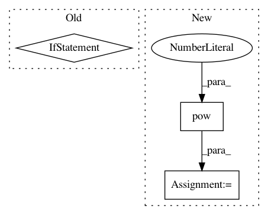

7ed2f75e6799b3421a52da2c08842e41177a50ab,mathics/builtin/graphics.py,LABColor,to_xyza,#LABColor#,487
Before Change
l0 = (l + 0.16) / 1.16
xyz = [inv_f(l0 + a / 5.), inv_f(l0), inv_f(l0 - b / 2.)]
return _clip(*[c * w for c, w in zip(xyz, _ref_white.xyz)]) + tuple(components[3:])
def to_laba(self):
return self.components
After Change
f_y = (l * 100. + 16.) / 116.
x = inv_f(a / 5. + f_y)
y = math.pow(f_y, 3) if (l * 100.0) > 903.3 * 0.008856 else (l * 100.0) / 903.3
z = inv_f(f_y - b / 2.)
return tuple(c * w for c, w in zip((x, y, z), _ref_white.xyz)) + tuple(components[3:])
def to_laba(self):
return self.components
In pattern: SUPERPATTERN
Frequency: 3
Non-data size: 3
Instances
Project Name: mathics/Mathics
Commit Name: 7ed2f75e6799b3421a52da2c08842e41177a50ab
Time: 2016-08-23
Author: Bernhard.Liebl@gmx.org
File Name: mathics/builtin/graphics.py
Class Name: LABColor
Method Name: to_xyza
Project Name: OpenNMT/OpenNMT-py
Commit Name: ba164c0dbb3d8171004380956a88431f4e8248ba
Time: 2017-08-01
Author: bpeters@coli.uni-saarland.de
File Name: onmt/Models.py
Class Name: Embeddings
Method Name: make_positional_encodings
Project Name: arraiy/torchgeometry
Commit Name: 7f0eb809f1509c452d85000fd002b12c22e358ca
Time: 2019-08-22
Author: ducha.aiki@gmail.com
File Name: kornia/filters/kernels.py
Class Name:
Method Name: gaussian